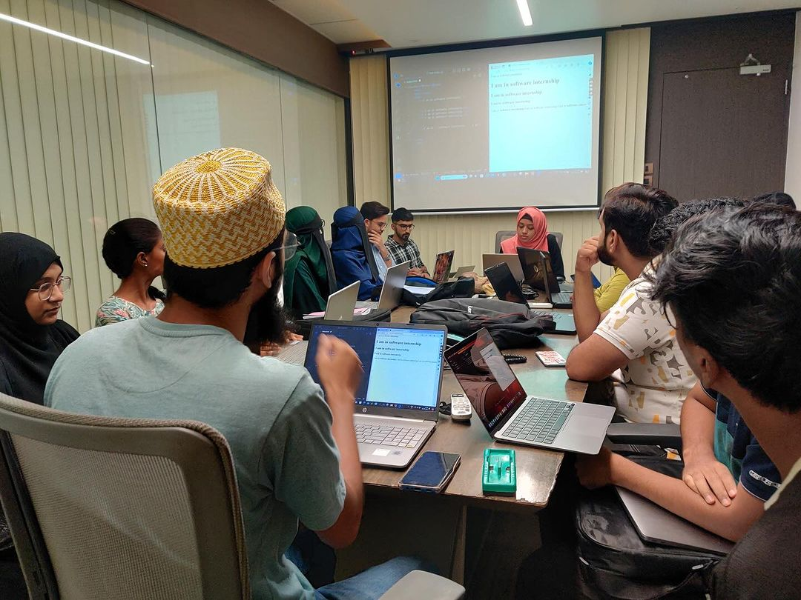
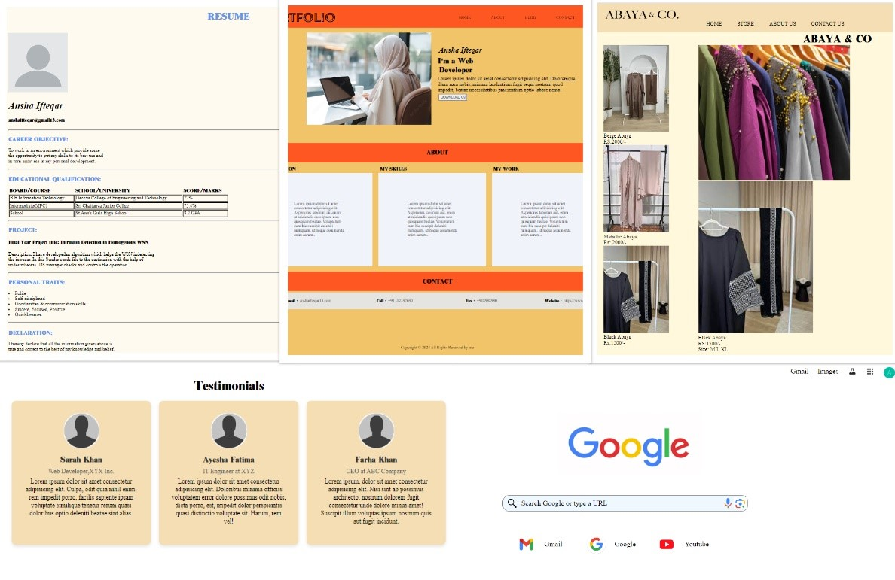

In this tech blog, I will be going through the lessons learned in Front End Web Development at Edventure Park. In the past 2 weeks, this internship gave me the opportunity to put my learning into practice and to gain hands-on experience in the field of web development. I have learned exciting new things during this internship by our Lead Instructor.
What is HTML & CSS?
HTML & CSS are the programming languages that tell a web browser how it should display the visual elements of a web page. While basic, they are some of the world's most commonly used programming languages. All modern web pages are built off of a base of HTML & CSS, so anyone looking to develop web applications will need to learn these languages.
What Can You Do with HTML & CSS?
Using HTML & CSS, you can design web pages and begin the process of learning how to create dynamic and evocative web pages. Learning HTML & CSS is also an essential first step in learning how to code web pages professionally.
Key Insights
How HTML and CSS work together:
You can have HTML without CSS (that would be really ugly!), but you can’t have CSS without HTML. CSS is applied to the HTML. HTML is the content of a webpage. So think of it like a Word document where you have all of your content (headings, subheadings, paragraphs, bullet points, etc). CSS is the style or appearance of that content. So CSS is kind of like the editor that tells what color, font and size each bit of text should be and also where to place it. We can also use CSS to actually place things around the page. HTML and CSS should always be kept in separate files. While there are ways to include CSS in an HTML document, the best practice is to keep it in its own separate document that the HTML document links to.
My Assignments:
The first assignment I worked on, was to create a basic HTML page in which we have to write curriculum vitae. This task was a great introduction to the world of web development and gave me a taste of what was to come. Then the second assignment was to create a Web Page by my own. This task was much more challenging than the first, but it was also much more rewarding. I learned how to use CSS to create a visually appealing website and how to use HTML to organize its content. Then the third Assignment was to create a Website using HTML as well as CSS, I was able to get a feel for the design and layout of a website. First week we have learned HTML and the second week we have learned about CSS, I was amazed at how these two technologies could be used together to create a beautiful and functional landing page. These assignments I worked on gave me a solid foundation in the skills and technologies I will need as a web developer, and I am excited to continue to build on what I learned during this internship.
These assignments I worked on gave me a solid foundation in the skills and technologies I will need as a web developer, and I am excited to continue to build on what I learned during this internship.